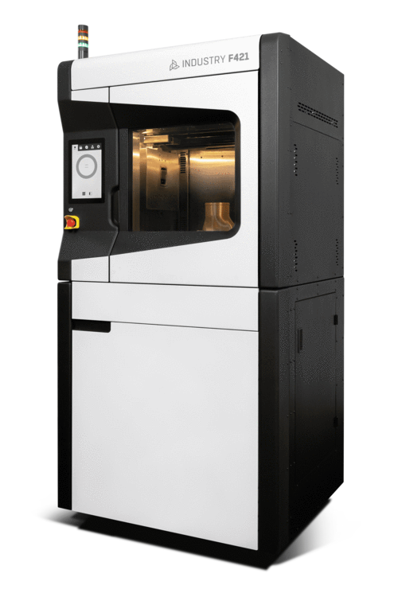
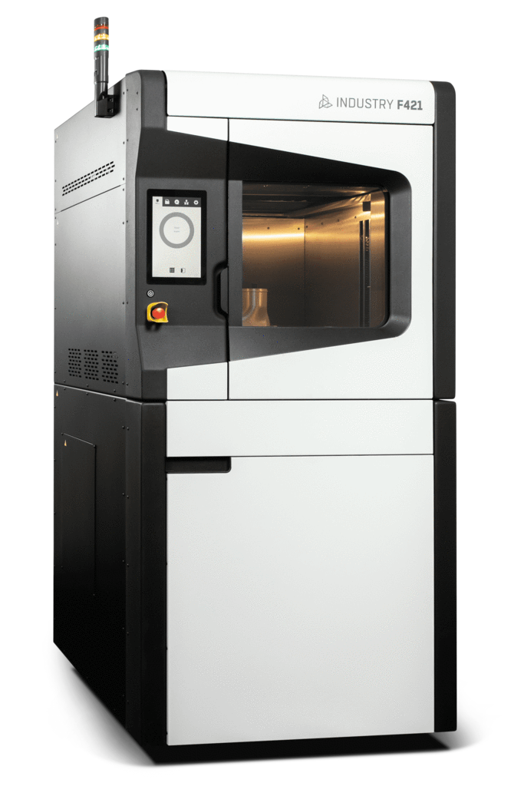
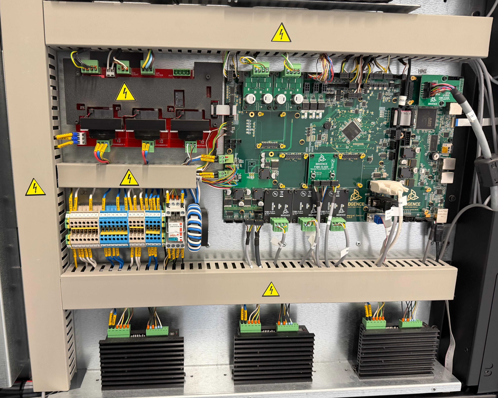
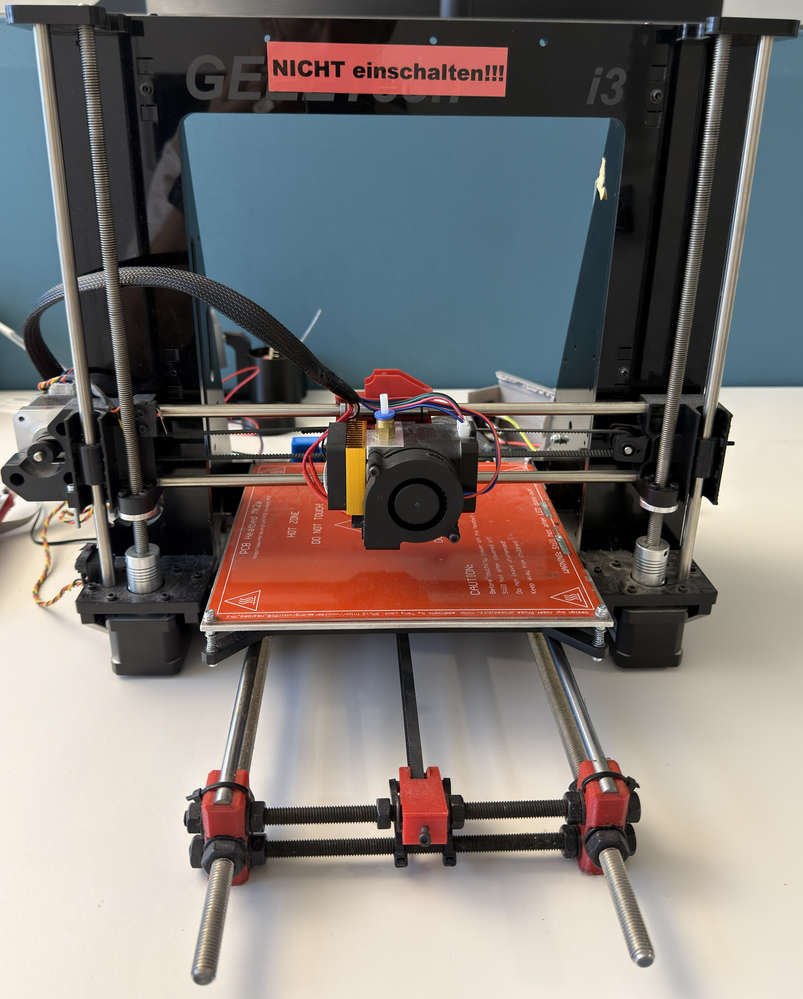

Praxissemester
Abschlussbericht
1 Beschreibung des Unternehmens
Die Airbus DS Airborne Solutions GmbH (ADAS) ist ein mit Hauptsitz in Bremen ansässiges Tochterunternehmen der Airbus Defence and Space (Airbus DS). Obwohl die ADAS zur Airbus Group gehört, agiert sie als eigenständiges Unternehmen. Die historischen Wurzeln reichen bis zur Gründung von Focke-Wulf im Jahr 1924 zurück. Nach mehreren Umstrukturierungen und Firmenwechseln, unter anderem als Teil der Atlas Elektronik GmbH, der Rheinmetall Defence Electronics GmbH und der Cassidian Airborne Solutions GmbH, wurde das Unternehmen im Jahr 2015 final von Airbus übernommen. Neben dem Standort in Bremen gibt es weltweit noch kleinere Betriebsstätten unter anderem auf Malta, Kreta, in Israel und auch Jagel in Deutschland. Mit rund 300 Mitarbeitenden (Stand 2025) in Bremen hat sich die ADAS gut in der Industrie etabliert. Im Gegensatz zur Muttergesellschaft, die am Bremer Flughafen ansässig ist, befindet sich der Standort der ADAS in der Bremer Neustadt.
Die Kernkompetenzen der ADAS umfassen die Entwicklung, Herstellung und Instandhaltung von unbemannten Drohnensystemen sowie von Frachtladesystemen (Cargo Loading Systems, CLS) für sämtliche zivile und militärische Flugzeuge.
Aufgrund dieses breiten Aufgabenspektrums ist das Unternehmen in verschiedene spezialisierte Fachabteilungen untergliedert. Das Fundament bildet der Bereich Forschung und Entwicklung (F&E) bzw. das Engineering. Hier werden Konstruktionen geplant sowie spezifische Soft- und Hardwarelösungen entwickelt. F&E bildet den Grundstein auf dem die anderen Abteilungen bei einem neuen Produkt aufbauen.
Im Anschluss an die Entwicklungsphase erfolgt die Fertigung der Produkte in enger Abstimmung mit der Abteilung für Produktion und Instandhaltung (Production and Maintenance, P&M). Neben der Umsetzung von Neuaufträgen übernimmt dieser Bereich auch die Bearbeitung von Garantiefällen sowie die Modernisierung und Wartung bestehender Hardware. Um höchste Qualitätsstandards für die gefertigten Produkte zu gewährleisten, verfügt die ADAS über spezialisierte Testlabore und Prüfstände, die strikt nach den Anforderungen aus der Qualitätsmanagementnorm DIN EN 9100 für die Luft- und Raumfahrtindustrie ausgerichtet sind und somit gut die geforderten Luftfahrtnormen abbilden können (z.B. EASA Part 21G/ 145). Um eine gute Erreichbarkeit von Materialien zu gewährleisten und Produkte von und zu dem Kunden liefern zu können ist in unmittelbarer Nähe ein Warehouse eingerichtet, welches Waren annimmt, prüft und an die ADAS weiterleitet oder nach Auftrag an den Kunden sendet.
Zur Einhaltung der oben genannten Anforderungen wird die interne Abteilung des Qualitätsmanagement zu Rate gezogen. Zusätzlich benötigte Abteilungen sind eine Sicherheitsabteilung zur Überwachung der digitalen und zivilien Sicherheit, die IT für interne technische Lösungen sowie Umsetzungen und die Personalabteilung (HR).
2 Vorstellung der Abteilung und des Arbeitsbereichs
Wie im Kapitel zuvor beschrieben gibt es bei der ADAS mehrere Abteilungen. Dieses Praktikum findet in der Abteilung Produktion und Instandhaltung (P&M) statt und wird sich somit haupsächlich auf diesen Bereich beziehen. Die Hauptaufgabe der P&M besteht darin neue Bauteile vorschritftsgemäß zu fertigen oder bestehende zu reparieren bzw. zu warten oder sogar zu ersetzen. Hierzu ist die Abteilung im rechten der beiden in Abbildung 1 zu sehenden Gebäude lokalisiert. Dieses Gebäude beinhaltet Büroräume, Laborplätze, Prüfstände, Konstruktionsplätze und Lagerkapazitäten. Außerdem wird eng mit der Entwicklung und dem Warehouse zusammengearbeitet. Es kommen täglich neue Aufträge zur Instandhaltung, Reparatur oder auch Verschrottung an, die hier bearbeitet werden. Neben dem Tagesgeschäft gibt es außerdem Aufträge von der Entwicklung zur Umsetzung von Prototypen sowie zur kompletten Fertigung. Also Support Prozess nimmt hierbei auch der 3D-Druck einen Teil ein, welcher bei Prototypen und auch bei fertigen Lösungen für spezielle Aufträge genutzt wird. In der Konstruktionswerkstatt werden diese speziellen Lösungen geplant und gefertigt.
3 Aufgabenstellung
Gegenstand dieses Praktikums ist die Erstellung einer Machbarkeitsstudie zur Weiterentwicklung und Verbesserung des Industriedruckers 3DGence Industry F421 (siehe Abbildung 2 (a) und Abbildung 2 (b)).


Das aktuelle System weist erhebliche softwareseitige Probleme auf, die während des Druckens zu wiederholten Fehlermeldungen führen. Das Ziel des Praktikums ist es, den Drucker genauer zu analysieren und zu prüfen, ob sich die Druckqualität und Zuverlässigkeit durch gezielte Software- oder Hardwareanpassungen verbessern lassen. Diese Machbarkeitsstudie dient als direkte Grundlage und Vorbereitung für eine spätere Bachelorarbeit.
Zu Beginn werden allgemeine Grundlagen des 3D-Drucks erarbeitet und das bestehende System untersucht. Dabei sollen Bauteile identifiziert werden, die sich eventuell austauschen lassen, um die spätere Ansteuerung zu erleichtern. Im nächsten Schritt werden isolierte Versuche an einzelnen Komponenten durchgeführt. So wird beispielsweise versucht, einzelne Bauteile wie die Schrittmotoren oder die Temperaturmesser, z.B. ein PT100 Glied, zuerst separat anzusprechen.
Für die Steuerung stehen verschiedene Hardware Lösungen zur Auswahl. Eine Möglichkeit besteht in der Kombination aus einem Einplatinencomputer wie dem Raspberry Pi 5 für die softwareseitige Steuerung und einem Klipper-Board, einem Mikrocontroller Board für die präzise Echtzeitansteuerung von Motoren und Heizlementen. Alternativ bietet ein FPGA Board, mit zwei Prozessorkernen, eine gute Gesamtlösung, somit kann es sowohl die Aufgaben des Raspberry Pi als auch die des Klipper Boards auf einer einzigen Platine verbinden, dies stellt jedoch bei der Umsetzung erheblichen Mehraufwand dar. Nach der erfolgreichen Ansteuerung der einzelnen Testkomponenten wird die neue Steuerung an das Originalsystem des Druckers angeschlossen. Der aktuelle interne Aufbau ist in Abbildung Abbildung 3 dargestellt.

Das Praktikum wird dann mit einer zusammenfassenden Machbarkeitsanalyse abgeschlossen. Diese liefert die notwendige Grundlage der Vorgehensweise sowie Verwendung der Bauelemente, um in der anschließenden Bachelorarbeit die einzelnen Komponenten zusammenzusetzen und den Drucker wieder voll funktionsfähig zu machen.
4 Bisherige Ergebnisse
Zu Beginn des Praktikums erfolgte eine Einarbeitung in die Grundlagen der 3D-Druck-Technologie. Darauf aufbauend wurden erste praktische Versuche zur Ansteuerung diverser Einzelkomponenten durchgeführt. Mithilfe von Python konnten über die GPIO-Schnittstelle eines Raspberry Pi 5 und entsprechend zwischengeschalteten Hardware-Treibern Schrittmotoren angesteuert sowie ein PT100-Glied zur Temperaturerfassung ausgelesen werden. Für die Antriebssteuerung kam zunächst ein zweiadriger Schrittmotor in Kombination mit einem L298N-Motortreiber zum Einsatz, der über eine selbst entworfene Python-Klasse mittels Pulsweitenmodulation (PWM) angesprochen wurde. Diese Klasse wurde im weiteren Verlauf um diverse Funktionen erweitert. Dazu gehören unter anderem die streckenbasierte Ansteuerung über einzelne Schritte (Steps), die parallele Ansteuerung der X- und Y-Achse sowie das Verarbeiten von G-Code von grundlegenden Achsenbewegungen, da dieser als Standard im 3D-Druck fungiert. Erweiterungen der Ansteuerung auf 4-Adrige Schrittmotoren sowie das Auslesen des PT100-Glied mit Hilfe des MAX31865 Treibers sind momentan nur in einzelnen Python-Skripten umgesetzt worden.
Zur Evaluierung einer geeigneten Softwarearchitektur für die neue Systemsteuerung wurde die 3D-Druck Firmware Klipper getestet. Um die Funktionen in einer realen Umgebung zu testen, wurde ein Testdrucker des Modells Geeetech i3 in Verbindung mit einem Arduino Mega 2560 Hardware Board als Referenzsystem zur Verfügung gestellt. Die Implementierung der Klipper-Steuerung an diesem Testsystem verlief erfolgreich und wurde durch einen kurzen Testdruck bestätigt. Dabei wurden die X-, Y- und Z-Achsen sowie der Extrudermotor gleichzeitig und fehlerfrei über den bereitgestellten G-Code ausgeführt. Zudem war es möglich, das Heizbett (Heatbed), den Extruder (Hotend), diverse Lüfter und die zugehörigen Temperatursensoren erfolgreich anzusprechen und die Daten auszulesen.

Nach der Inbetriebnahme des Referenzsystems lag der Fokus auf der Bestandsaufnahme des 3DGence Industry F421. Die Hardware-Analyse, bestehend aus Leitungsverfolgung und Bauteilerfassung, konnte bereits zu großen Teilen erledigt werden. Nahezu alle intern verbauten Komponenten des Industriedruckers wurden dokumentiert, um eine gute Basis für die anstehenden Modifikationen und die Integration der neuen Steuerung zu schaffen.
Basierend auf diesen Zwischenergebnissen definieren sich die nächsten Schritte der Machbarkeitsstudie. Im Zentrum steht nun die Untersuchung der Kommunikationsschnittstellen, um die spezifischen Datenübertragungsprotokolle des F421-Druckers zu verstehen und zu entschlüsseln. Darauf aufbauend werden geeignete Bau- und Steuerungselemente herausgesucht, die für den weiteren Projektverlauf und die finale Umsetzung innerhalb der Bachelorarbeit zwingend erforderlich sind. Hierunter fällt eine Auswahl an Hardware-Boards sowie eine eventuell benötigte, bei Bedarf auch selber entworfene, Adapterplatine. Darüber hinaus wird die Klipper-Konfiguration weiter verfeinert, um Kalibrierungen und Einschaltprotokolle in die Software einzupflegen. Parallel dazu soll die entwickelte Python-Klasse strukturell bereinigt und optimiert werden, um eine dauerhaft stabile Grundansteuerung auch direkt über Python zu gewährleisten.
5 Literaturverzeichnis
Zitat
@online{ick2026,
author = {Ick, Mirco},
title = {Praxissemester},
date = {2026-08-25},
langid = {de}
}